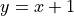

Cameron’s Module¶
This is new text.
These are the functions that Cameron created:
- camerons_module.random_integer(x)[source]¶
Cameron’s first function.
- Parameters
x (float) – Some positive integer.
- Returns
Returns a random integer between 1 and x (inclusive)
- Return type
int
- camerons_module.successor_function(x)[source]¶
Cameron’s second function.
- Parameters
x (float) – Some number.
- Returns
Returns 
- Return type
float
Below is an example for how to use these functions.
from camerons_module import *
random_integer(30)
successor_function(2)